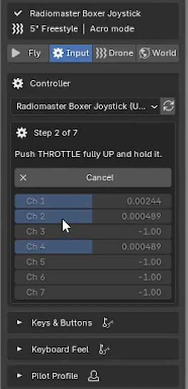
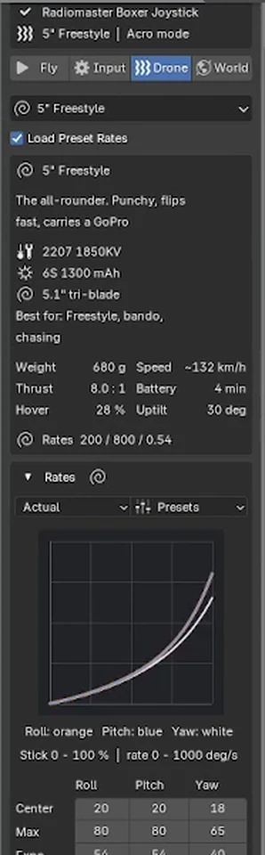
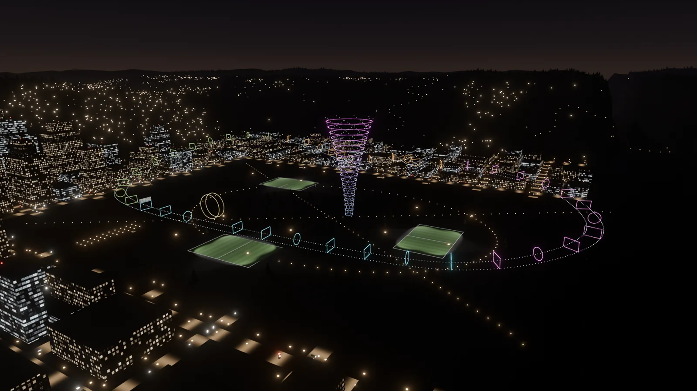

Blender add-on by LarkLab
FPV Flight SimulatorReal-time FPV drone flight for Blender
Plug in your RC radio or gamepad and fly a real-feel FPV drone live in the viewport, through your own scene. Betaflight rates, real quad physics and collisions. Every flight is recorded as keyframes, ready to render.
Your radio. Your gamepad. Or the keyboard.
Controllers are read straight through Windows, so there is nothing else to install. A short setup wizard finds every stick, its direction and range, and the add-on remembers each controller for next time.
- Install the zip: Edit > Preferences > Get Extensions > Install from Disk.
- Open the FPV Flight Simulator tab (N), pick your controller and press Set Up Controller.
- Hold each stick when asked: throttle, yaw, pitch, roll. Done in about thirty seconds.
- Press Fly (Ctrl+Shift+F), arm with the throttle low and take off.

Radios
- Radiomaster (Boxer, TX16S, Zorro, Pocket)Yes
- TBS Tango 2 & MamboYes
- Jumper (T-Pro, T20, T-Lite)Yes
- BetaFPV LiteRadioYes
- FlySkyYes
- iFlight CommandoYes
- DJI FPV Remote ControllerYes
- Any EdgeTX / OpenTX radio in USB joystick modeYes
Gamepads and keyboard
- Xbox Series X|SYes
- Xbox One & Xbox 360Yes
- PS5 DualSenseYes
- PS4 DualShockYes
- Nintendo Switch ProYes
- Any USB gamepadYes
- KeyboardYes
Your Betaflight rates. Real quad physics.
Rates use the exact Betaflight formulas, so the sticks feel like your quad or your sim. Copy a diff from the Betaflight CLI and press Paste Betaflight Rates: rates, expo, throttle mid and throttle expo come straight in.
Thrust that behaves
Motors spool up and down, thrust grows with motor speed and fades as the props lose bite at speed, so punch-outs and dives feel right.
Air that pushes back
Separate front, side and top drag, rotor drag, prop wash when you drop into your own air, wind, turbulence and battery sag.
Actual, Betaflight, KISS, Quick
All four rate types with a live rate curve, plus throttle mid, throttle expo and throttle limit.

Thirteen drones, from tiny whoop to cinelifter.
Each preset sets the physics, camera uptilt, battery time and matching rates, with its real build on the card. Change any value and it becomes your own quad.
5" Freestyle
2207 1850KV · 6S 1300 · 5.1" tri
5" Juicy Freestyle
Soft rates, heavy expo, smooth throttle
5" Bando Basher
Full GoPro, more prop wash in dives
5" Race
2306 2450KV · near-linear rates
3" Toothpick
Ultralight 4S, floaty and forgiving
65 mm Tiny Whoop
Ducted 1S, flies through doors
3.5" Cinewhoop
Ducted, action camera, one-take shots
2.5" Indoor Cinewhoop
Small and steady for flythroughs
4" Light Long Range
Li-ion cruiser, long flight time
6" Mountain Surfer
Fast and stable on long dives
7" Long Range
2806.5 1300KV · smooth carving
X8 Cinelifter
Cinema camera, heavy and stable
Beginner TrainerAngle
Soft rates, 70% throttle limit
Top speeds are measured in the add-on's physics at full throttle in level flight.
Live in the viewport, with a pilot's HUD.
The view switches to the drone's FPV camera. Speed, altitude, throttle, battery, flight mode and both sticks are on screen, and the motors sound as you fly.
Flight modes
- Acro
- Rate mode like a real freestyle quad
- Angle
- Self-leveling, sticks set the tilt
- Horizon
- Levels near center, flips at full stick
- Cine
- Sticks set speed, let go to brake and hover
While you fly
- Rewind
- Hold Q: time runs back, then fly on from there
- Slow motion
- Fly at half speed, the take plays back at real speed
- Views
- FPV, chase or free camera, one key
- Arm
- Low throttle to arm, like on a real quad
Every flight becomes keyframes.
Press Record and fly. Each flight is saved as its own take, plays back on the timeline and renders like any animation, in Eevee or Cycles, on any machine.
The drone's FPV camera with real uptilt and field of view.
Rendered in EeveeRetake from any frame
Put the playhead where it went wrong. The old take plays for a short pre-roll, then you take over at full speed. Everything before stays.
Smooth and stabilize
Smooth Take softens position and rotation separately. Stabilized Camera gives a smooth, level-horizon camera for cinematic cuts.
Telemetry for your OSD
Speed, altitude, throttle, motor and battery are keyed on the drone, ready for drivers or an OSD.
Fly your own camera
Use the built-in 5" drone and FPV camera, or fly any camera in your scene.
It hits what it should hit.
The drone collides with every visible mesh, including collection instances and Geometry Nodes geometry, or just one collection you choose. Crash and bounce off, reset to the launch pad, or pause.
While you record, the timeline runs with you, so animated objects are where you see them. Wind, turbulence, battery time and scene scale are all one click away.

Details
- Blender
- 5.0 or newer
- System
- Windows
- Type
- Blender extension (add-on)
- Where
- FPV Flight Simulator tab in the 3D Viewport sidebar (N)
- Controllers
- RC radios, gamepads, keyboard
- Output
- Keyframes on the drone and cameras
- Render
- Eevee and Cycles
- Dependencies
- None
- Version
- 1.0.0
- License
- GPL-3.0-or-later
Want the goggle look? FPV Feed adds signal breakup and a live flight OSD to any render. Rather click than fly? FPV Flight Line builds the whole flight from a few waypoints.
See FPV FeedSee FPV Flight Line